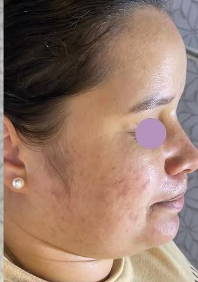
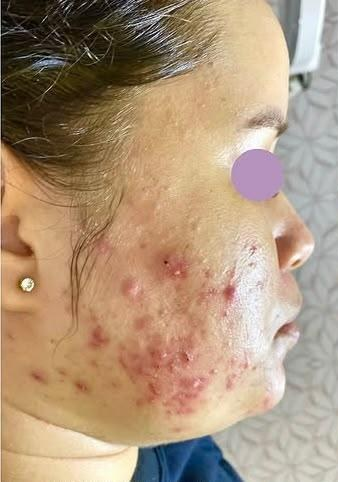
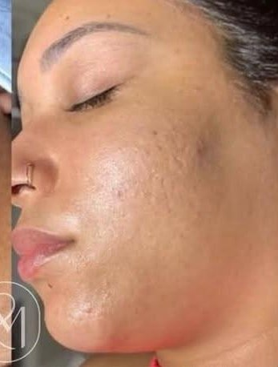
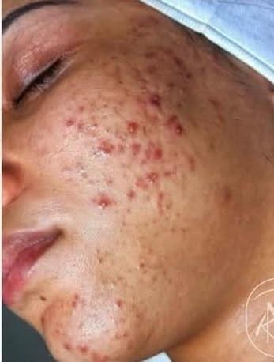
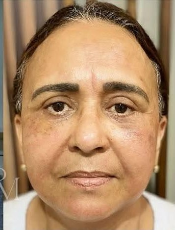

Avaliação Inicial
Diagnóstico completo de pele para montar o plano de tratamento certo desde a primeira sessão.
Comece por aqui Perguntar no WhatsAppMais de 7 anos cuidando de peles reais. Protocolos personalizados que unem conhecimento técnico e acolhimento — porque autoestima também se constrói com evidência.

“Sua pele não precisa de mais produtos, precisa de mais ciência.”
Cada protocolo começa com avaliação individual — o que funciona para uma pele raramente é igual para outra.
Diagnóstico completo de pele para montar o plano de tratamento certo desde a primeira sessão.
Comece por aqui Perguntar no WhatsAppLimpeza de pele, peelings e protocolos anti-idade sob medida, com acompanhamento de evolução.
Mais procurado Perguntar no WhatsAppHidratação profunda com efeito glow imediato — indicado antes de eventos ou como manutenção mensal.
Perguntar no WhatsAppRotina personalizada com produtos indicados para o seu tipo de pele, sem excesso e sem modismo.
Perguntar no WhatsAppPrograma de acompanhamento contínuo, com sessões recorrentes e prioridade na agenda.
Assinatura Perguntar no WhatsAppPara esteticistas que querem estruturar consultório, atendimento e resultado com base técnica.
Para profissionais Perguntar no WhatsAppNenhum protocolo começa no escuro. O caminho é sempre o mesmo — entender antes de tratar.
Você conta o que sente na pele e o que já tentou. Ali mesmo a gente encontra o melhor horário.
Análise do tipo de pele, do histórico e da rotina — a base para montar um plano que faça sentido.
Sessões definidas para o seu caso, com o número estimado de encontros explicado desde o início.
Acompanhamento da evolução e uma rotina de skincare possível de manter em casa, sem excessos.
Pacientes reais, acompanhadas sessão a sessão — sem filtro e sem promessa milagrosa. Arraste a alça para comparar.





Imagens de pacientes reais, publicadas com autorização. Resultados variam conforme o tipo de pele, o histórico e a adesão ao protocolo — por isso cada plano é definido depois da avaliação.

Esteticista com formação também em Biomedicina, Renata construiu sua trajetória atendendo peles reais — com acne, rosácea, manchas e todas as fases da pele adulta — sempre traduzindo ciência em cuidado acessível.
Mais do que procedimentos, cada atendimento é pensado como um espaço de escuta: entender a rotina, o histórico e as expectativas da paciente antes de qualquer protocolo.

Certificação em Especialista Facial, entre outros diplomas de aperfeiçoamento profissional expostos no consultório.
Um consultório pensado nos detalhes — do aroma ao acolhimento — para que cada sessão seja também um momento de pausa.
Mensagens recebidas de pacientes do consultório.
Quando lembro de como minha pele era e vejo como ela está hoje, meu coração fica cheio de gratidão.
Só quem vive um surto de acne sabe a dor que é. Obrigada por ter sido tão importante para a minha evolução!
Obrigada por sempre cuidar dessa pele com tanto carinho e profissionalismo.
Todos deveriam conhecer seu trabalho, ele muda vidas.
Depende do protocolo — a maioria das sessões (limpeza de pele, skincare, hidratação) é bem tolerável. Procedimentos com agulhamento ou peelings mais profundos podem gerar leve desconforto, e isso é sempre explicado antes de começar.
Varia de pessoa para pessoa e do objetivo (acne, textura, rejuvenescimento). Na avaliação inicial, Renata monta um plano com a quantidade estimada de sessões para o seu caso.
Para a maioria dos tratamentos não é necessário preparo especial. Quando algum procedimento exigir cuidado prévio (ex.: evitar sol, suspender ácidos), isso é combinado com antecedência.
Sim — inclusive é uma das principais especialidades do consultório. O protocolo é sempre ajustado ao tipo e à condição da pele no momento da avaliação.
É só chamar no WhatsApp com o serviço de interesse — a confirmação de horário é feita por lá mesmo. O atendimento é com hora marcada.
Na R. Jorge Amado, 110, 1º andar, Sala 204 — Centro, Ilhéus (BA). Ver no mapa →
Fale direto pelo WhatsApp para tirar dúvidas ou agendar sua avaliação inicial.
Escolha o que você procura — a mensagem já vai pronta para o WhatsApp.
Qual tratamento?Resposta rápida, direto com a Renata.